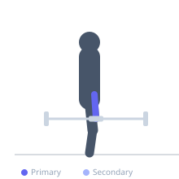
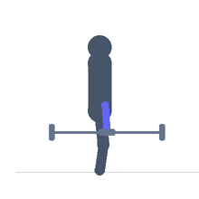

Exercise guide / Wrist Curl
Wrist Curl
The wrist curl is an isolation exercise for the wrist flexor muscles of the forearm, performed with the forearms resting on a flat surface and the wrists hanging free beyond the edge. The palms face upward, and the wrists flex to curl the weight toward the forearm. It directly targets the flexor carpi radialis and flexor carpi ulnaris, with contribution from the finger flexors. It is a fundamental forearm-strengthening exercise for grip-dependent sports and activities.
Primary muscles
flexor carpi radialis
flexor carpi ulnaris
Secondary muscles
Equipment
Dumbbell (Fixed)
Optional
Flat Bench
EZ-Curl Bar


Starting position
- Sit on a bench. Rest the forearms on the thighs or on the bench surface with the wrists hanging beyond the edge, palms facing up. Hold a dumbbell (or barbell) in the hands with the fingers curled around it.
Setup
- Sit on a flat bench. Place both forearms on the thighs or bench pad so they are fully supported. The wrists hang off the edge. Use a relatively light weight — the forearm flexors fatigue quickly.
Steps
- Step 1: Forearms resting on a surface, wrists hanging off the edge, palms facing upward, weight in hands.
- Step 2: Allow the wrists to relax fully downward into extension before each rep.
- Step 3: Exhale and flex the wrists, curling the weight upward as far as possible.
- Step 4: Inhale and slowly lower the wrists back to full extension.
Coaching cues
- Let the weight roll to the fingertips at the bottom — full drop
- Curl only the wrists — the forearms stay on the bench
Breathing
- Exhale on the curl; inhale on the lowering.
Range of motion
- Full wrist extension (drop) at the bottom; maximum wrist flexion (curl) at the top.
Tempo
- 2-1-2-0
Common mistakes
- Not allowing the wrists to fully extend at the bottom, reducing the range of motion
- Using excessively heavy weight, which forces the forearms off the support surface
Safety
- Keep forearms fully supported on the bench or thighs throughout
- Stop if sharp pain is felt at the wrist or elbow
Training
- hypertrophy: 12–20 reps
- endurance: 15–30 reps
- hypertrophy: 3–4 sets
- endurance: 2–3 sets
- Rest: {'hypertrophy': 45, 'endurance': 30}